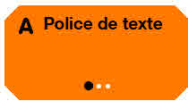
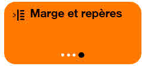

Orange Confort+
Pour des pages web plus utilisables.
Pour mettre en valeur l’accessibilité de votre site web.
Confort+ est une extension de navigateur qui facilite la lecture et la navigation dans les pages internet. Elle permet de corriger l’affichage du texte, des boutons, des liens, mais aussi de la vocalisation et une navigation facilitée en proposant des boutons spécifiques, un gros pointeur de souris, un focus bien visible et des accès rapides à de nombreux réglages.
Orange Confort+ est une extension de navigateur à télécharger gratuitement (open-source) — disponible sur .
Sur certains sites web, Confort+ est déjà installé. Dans ce cas, vous y avez accès directement depuis la pastille affichée en haut à droite, comme c’est le cas sur ce site.
À qui s’adresse le service Orange Confort+
La palette Confort+ est organisée par groupes de réglages, les uns à destination des personnes cherchant juste un peu plus de facilité à l’usage (Mode Facile+), les autres à destination des personnes à la recherche de réglages visuels légers (Mode Visuel+) ou de réglages visuels plus poussés tels qu’un fort zoom et un très fort contraste (Mode Visuel++).
D’autres réglages sont à destination des personnes ayant besoin d’aménagement pour la lecture
tels qu’un texte bien lisible et vocalisé
(Mode Lecture+) ou d’outils plus avancés tels
que des règles, des marges, de la colorisation
(Mode Lecture++).
Enfin des réglages de navigation sont proposés pour les personnes ayant des difficultés
avec le pointeur de la souris et utilisant de préférence de plus gros boutons ou même
n’ayant pas besoin de cliquer à la souris avec un clic automatique par survol
(Mode Pointage+).
D’autres réglages sont disponibles pour les personnes utilisant
uniquement des boutons ou les commandes du clavier pour naviguer dans les pages web
(Mode Moteur+).
Pour les développeurs de sites web, Confort+ est un excellent moyen de rendre encore plus visible les travaux de mise en accessibilité effectués sur leur site internet.
D’où vient Confort+ ?
Le service Orange Confort+ a été créé par Orange. Il met en œuvre la démarche de conception, centrée sur la diversité des utilisateurs et déroulant les principes de la conception universelle. Une interface pour tous, et des réglages personnalisés pour chacun.
Prérequis
Les réglages de Confort+ ne fonctionneront correctement que sur un site respectant les règles d’accessibilité. Si le site est inaccessible il risque d’être fortement compromis. Un bouton Pause permet alors de temporairement désactiver Confort+.
Si Confort+ n’améliore pas le site web, c’est qu’il ne respecte pas les règles, c’est alors l’occasion de signaler les sites inaccessibles. C’est aussi l’occasion de constater les efforts de mise en accessibilité effectués par certains sites.
Comment l’obtenir
L’extension Confort+ est disponible dans la liste des extensions disponibles pour les navigateurs .
Téléchargement de l’extension
La dernière version est expérimentale.
Si vous choisissez d’installer cette version, nous vous invitons à nous remonter vos commentaires
par messagerie à confort.plus@orange.com.
Version 5.0.0 (expérimentale)
Version antérieure (4.3.6)
Cette extension est toujours distribuée : consultez le site de la version 4.
Installer Confort+
Utiliser Confort+
Choisir son mode d’usage
Explorez les modes d’usages et choisissez celui qui vous convient le mieux en cliquant sur « Valider ce mode ».
Si vous hésitez entre deux, pas d’inquiétude, tous les réglages sont disponibles dans tous les modes d’usages. Vous pourrez donc affiner vos réglages personnalisés.
En revenant sur cet écran, vous pourrez également réinitialiser le mode d’usage.
Une fois le mode choisi, vous pouvez refermer la palette Confort+ en cliquant sur le double chevrons en haut à droite de la palette.
Pour rouvrir la palette, il suffira de cliquer sur la vignette représentant un être humain dans un cercle — symbole de l’accessibilité universelle.
Pause
Certaines pages étant trop peu respectueuses des règles d’accessibilité, Confort+ fait alors plus de dégâts visuels que de bénéfices. Il est alors pratique de désactiver l’ensemble des réglages de Confort+ en une fois. Pour cela, appuyez sur le bouton « Pause ».
Les boutons multi-clics
Pour modifier les réglages, vous avez un accès rapide à une sélection via de gros boutons. Ces boutons peuvent être cliqués plusieurs fois d’affilée (3 ou 4 fois), les différents réglages seront alors mis en œuvre au sein de la page web.
Le premier réglage de chaque bouton (lorsque le point noir est le plus à gauche) est sans effet, il ne modifie pas la page en cours. C’est une façon d’annuler un des réglages.
Les réglages complets
En cliquant sur le bouton « Tous les réglages » en bas de la palette de l’accueil, vous pouvez accéder à l’ensemble des réglages disponibles dans tous les modes d’usages. La liste est longue et découpée en catégories (Texte, Affichage, Images, Audio, Navigation). Les boutons « Plus de choix » permettent d’accéder aux réglages avancés qui donnent d’autres choix.
Les réglages avancés
Les réglages avancés permettent de naviguer au sein d’un choix encore plus large pour chaque réglage. Si vous choisissez un réglage qui n’est pas déjà présent dans le bouton multi-clic correspondant, il lui sera ajouté comme un 4ème choix personnalisé.
La mémorisation de vos réglages
Confort+ se souviendra de vos réglages pour chaque site web visité. Vous pourrez ainsi effectuer certains réglages pour une page et certains autres pour une autre page. Quand vous reviendrez sur ces sites, Confort+ mettra alors en place les bons réglages spécifiques à chaque page.
Vous êtes développeur ?
Vous souhaitez intégrer Orange Confort+ dans vos pages ?
Le service est peu intrusif : il s’intègre sous forme d’un bouton (que nous nommons « pastille »).
Confort+ propose une amélioration de l’usage du site, mais ne corrigera pas un site ne respectant pas les règles d’accessibilité. Pour que Confort+ propose une solution optimale, votre site doit respecter les recommandations d’accessibilité WCAG 2.2 ou RGAA 4.1.2.
Lors de l’activation du service par un utilisateur, une palette de navigation s’affiche.
Dans votre site, l’ajout du service Orange Confort+ est réalisé par la simple inclusion d’un fichier JavaScript dans votre code HTML.
Le fichier JavaScript du service Orange Confort+ doit être hébergé sur un serveur. Ce serveur peut être celui de votre site, ou un serveur distant hébergé par un partenaire (sur un autre domaine). Si vous faites le choix d’utiliser un serveur distant hébergé par un partenaire, l’utilisateur du service Orange Confort+ retrouvera ses réglages sur tous les sites utilisant ce serveur.
L’accessibilité d’Orange Confort+
Orange Confort+ n’a pas encore fait l’objet d’un audit WCAG. Consulter la déclaration de conformité.